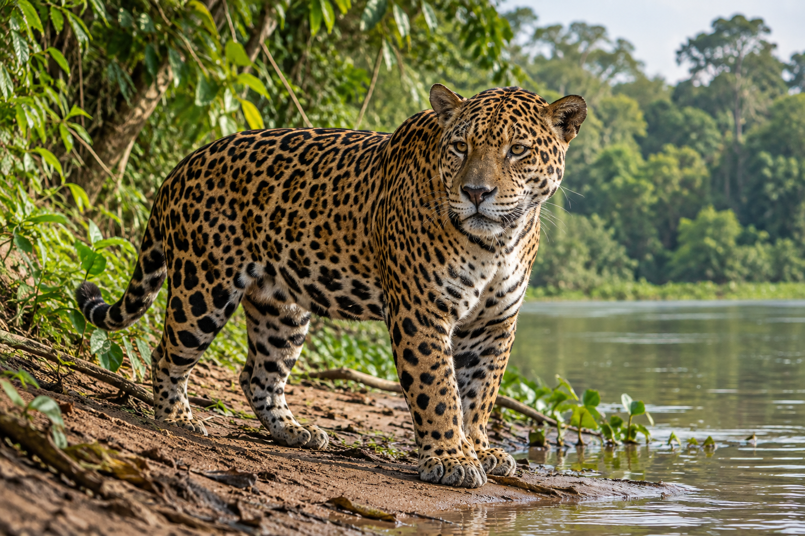

Mamífero
Onça-pintada
Panthera onca
Felino de pelagem marcada por manchas. É carnívora e pode ser encontrada em florestas e áreas do Pantanal.
- Alimentação
- Carnívoro
- Conservação
- Quase ameaçada
Biomas: Amazônia, Pantanal, Cerrado, Mata Atlântica e Caatinga.